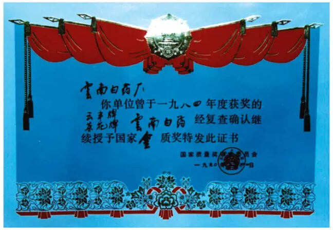
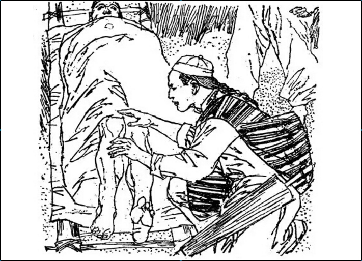
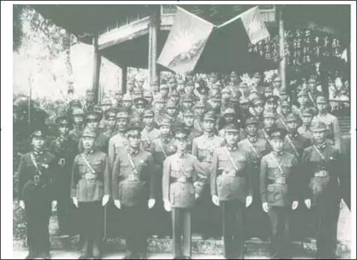
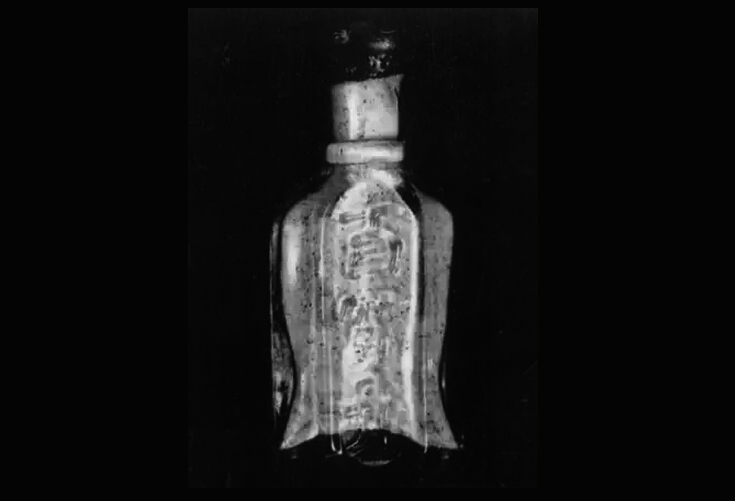
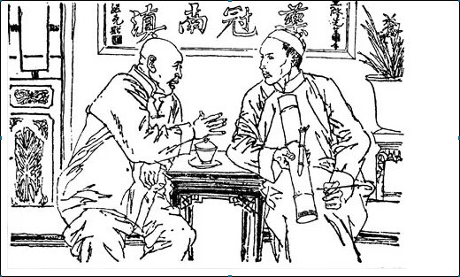
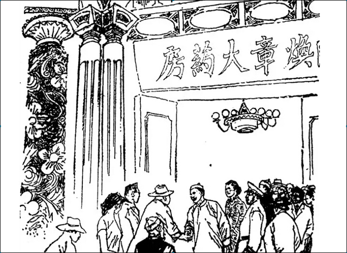
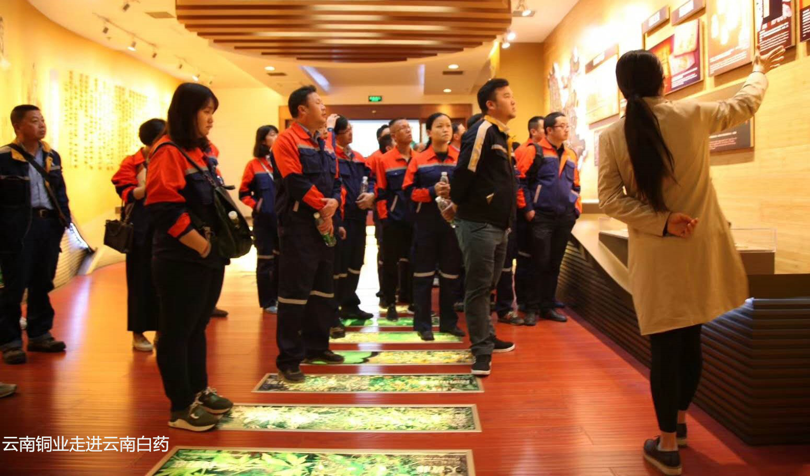
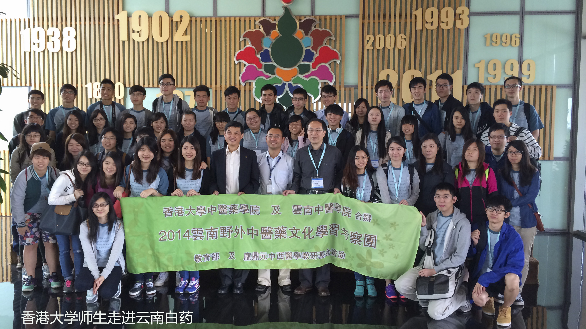

活动开放时间每周五
地址：昆明市呈贡区云南白药街3686号
-
首页
-
参观报名
-
活动介绍
-
交通指南
-
报名查询
- 
- 
- 
- 
- 
- 
-
揭秘|老照片记录80年前白药得过这个奖
1935年12月，曲焕章万应百宝丹在云南省提倡国货委员会国货展览会上获得特等奖。曲焕章在《云南新报》上刊登感谢启事。新中国成立后，曲焕章遗孀缪兰瑛在人民政府的帮助下，积极从事百宝丹的生产，1951年10月，“曲焕章万应百宝丹”在西南区工业展览会上展出，受到群众的欢迎，获得了西南区工业展览会甲等奖状。1979年11月，茶花牌云南白药荣获国家优质产品金质奖章之际，人民日报社出版的内刊《市场》刊登《云南白药的来历》一文，继1979年起，1984年、1990年，云南白药共连续三次获得国家质量金奖。图片来自本司档案室
-
云南白药前世今生——初创
父母双亡他，原名曲占恩，后改名焕章，字星阶，清朝光绪六年（1880年）出生于云南省江川县赵官村一个农民家庭，上有三个姐姐，出生时家境殷实，有良田七余亩，三大间有楼瓦房。其父曲宗周为其起名占恩，希望儿子沾上祖恩，长大成人，干一番荣宗耀祖的事业。欣喜之余，曲老倌不免为儿子的以后发起愁来，为防他人欺凌，守住家业。夫妻两人想来想去，终于想出一个办法：将十岁的三女儿托媒许给本村的袁举人家的长子袁槐，日后也好有个照应。谁知天有不测风云，曲焕章还不到七岁，曲宗周夫妇就舍下亲生儿女相继亡故。1889年，袁举人听说曲老夫妻俩去世，连忙赶来，帮着把丧事办了，并把三姐接到家中。不久，给儿子和三姐办了婚事。曲焕章由祖母抚养，不时到三姐夫家生活。拜师学医1892年，十二岁的曲焕章来到袁家跟随姐翁袁恩龄学治伤科，在姐夫袁槐带领下学习配制万应丹及伤科用药的粗浅知识，并在袁家父子的指点下，学习一些治疗伤痛的技巧，几年下来，他熟练掌握了治伤技能。初试医术1896年，由袁家托媒操办，曲焕章娶周官村犁铧匠之女李惠英为妻，成家后开始独立生活，凭借在袁家学到的一点治伤技能，给偶尔上门求医者治伤。因曲焕章是孤儿，学东西格外上心，加之他天资聪颖，到1898年上门就医的病人日益增多。于是，曲焕章就开始自己采购药材，并教妻子加工配制万应百宝丹和其它伤科用药。凡有伤者，有求必应，耐心医治，直至痊愈。附近龙泉村有一姓郑的人家，新近买了一匹性子暴烈的马，不听驯服，一天它突然挣脱绳子，一口将主人家小儿子的腿咬伤了，家人请了好多医生都治不好，听说曲焕章擅长治外伤，便请来给小孩医治，曲焕章用疮痈敷擦之剂，没几日伤口就痊愈了，这样一来，大家便对其另眼相看。又有一次，本村的一个小孩上树摘樱桃，不小心摔了下来，腿跌断了，请了好多医生也没治好，他们又请来曲焕章。曲焕章先给小孩腿上敷上一些草药，敷至十多天让腿部消肿，然后取出碎骨，又敷上草药，不久即能下床行动。无人就医时，曲焕章就背着药物到附近村镇出诊治伤，积累了一些药理方法和治伤经验，成为了江川一带小有名气的伤科医生。创制白药在此期间，曲焕章游历滇东北、滇西北、四川、贵州一带，这些地方山多林深，盛产草药。他采制的草药多用来防治练武中的跌打损伤、伤骨淤血等，主要是外用，这段游历经历为其创制云南白药奠定了基础。曲焕章游历过程中每到一处，都拜访民间草药医生，探求各种丹方秘剂，采集各种草药，但凡所闻所见者，总要寻根究底，跋涉艰难险阻而不畏惧，不断总结和创新。他以彝族民间用药为基础，吸取马帮行医时的用药经验，同时学习和继承中国传统医学知识，借鉴李时珍《本草纲目》和兰茂的《滇南本草》等中医药经典著作，博采众长，遍尝百草，经过多年的反复试制、改进和验证，于1902年创制了“云南白药”。原文链接
-
云南白药与抗日战争不可不说的故事
九•一八事变后，日本对东北三省的大规模侵略，强烈地震动了中国社会，一些群众性的抗日救亡运动很快在全国许多城市和村镇掀起，抗日热浪一潮高过一潮。白药创制人曲焕章先生心系祖国，情牵于民，用捐赠百宝丹（即云南白药）的实际行动来报效祖国。1931年曲焕章上书中央党部道“倭奴暴动，侵我疆土，丧我国权，掳我钱财，痛闻之余，无不毛发俱指！章僻处滇南，心存济世，平生精制各种作战之枪刀诸药，能有起死回生之功，已为中外人士所推许。此次对日宣战，章愿竭尽心力，尽其义务，以表区区爱国之热忱，而惟作战之将士以善后。倘蒙驱使，愿效全力。”著名抗日将领张学良也曾致电昆明商会，电称：“该市医师曲焕章报效百宝丹九千瓶，以供抗日军用，爱国心长，殊堪嘉。倘俟有需要，再行电达索寄。”1937年七七卢沟桥事变抗日战争全面爆发，大后方云南各族人民，有钱出钱，有力出力，在抗日救亡运动这股洪流中，曲焕章满腔爱国热情热血沸腾难抑。九月的一天，云南人民热烈欢送国民政府60军北上抗日，曲焕章带领药房全部伙计，对凡经过店门口的60军官兵都发一瓶百宝丹和一张仿单，共捐出3万瓶百宝丹。1938年3月，60军开拔到山东一带参战，在台儿庄战役中60军官兵英勇顽强，许多将士负了伤，立即外敷内服“百宝丹”，后又冲锋陷阵。在激烈的战斗中，“百宝丹”医治好了许多伤员的重伤，挽救了他们的性命，使他们能够坚持战斗，给予日军重创，取得了抗日的重大胜利。连日本媒体也不得不承认：“自九•一八与华军开战以来，遇到滇军猛烈冲锋，实为罕见。”曾经给云南省主席龙云担任过侍卫长的朱希贤，当年在台儿庄战役中，对白药有了亲身的体验：伤口负得太重，拿出自己的白药洒上一点。白药洒上去以后，包扎起来，两天伤口就愈合了。差不多每个人都把白药看成至宝，救命的至宝。1939年，华侨黄铁魂报名参加南侨机工回国抗战，在7月份惨烈的长沙战役中，他的腿被敌机炸伤，至今他尤其记得受伤后使用云南白药“真是好”。百宝丹因药效如神，是滇军的“随身三件宝”之一，滇军神威也令百宝丹名声大振，百宝丹为抗日战争做出了卓越的贡献。注：云南白药在1927年—1955年期间叫做“曲焕章万应百宝丹”，民间简称“百宝丹”。原文链接
-
白药奇缘之白药更名百宝丹
得到赵咏泉扶持，曲焕章在通海一时间名声大噪。1918年起，白药也从纸包装改为八厘米高的长形瓷瓶装，并附上仿单销售，以方便病人。经好友撮合“娶一通海小星，有利于世居通海，更有利于医药事业发展……”，不久，曲焕章在通海又续娶缪兰瑛为妻，先后育有一子三女：曲嘉瑞、曲翠林、曲竹林、曲惠林。1922年，曲焕章考虑白药的名称和市面上好多药名字雷同，如苏打胃粉与各种西药都与白药混称，他给白药另起一新名“百宝丹”，意思是白药像太上老君炼丹那样九转百炼而成。曲焕章在行医的实践过程中，非常注重一些古书未记载的民间草药，以及民间应用这些草药的宝贵经验，并亲自尝试、探索各种草药配合之后的变化和用途。他借鉴云南彝族传统的医学经验，通过自己亲身实验，除百宝丹外，还制作出不少疗效显著的丹、散、酒、膏等各类药品，如虎力散、撑骨散、保身药酒、跌打药酒、止血散、万应华羊膏等。1902年，白药发明之初并没有为其命名，因颜色为白色，所以民间就叫它“白药”。1922年，取新名为“百宝丹”，寓意此药像太上老君炼丹一样九转百炼而成。1927年，曲焕章经过反复研究和验证，使白药“一药化三丹一子”分别对应不同的症状，之后便更名为“曲焕章万应百宝丹”。1955年，在曲焕章去世多年后，其妻缪兰瑛于将“曲焕章万应百宝丹”的配方贡献给国家，并正式定名为“云南白药”，1956年起由国家批准正式生产。
-
云南王唐继尧说它——药冠南滇
1924年1月26日，昆明市政公所核准发给曲焕章草科医士执照，曲焕章在昆明正式开设伤科诊所，开始准备大批量制造瓶装百宝丹，附上仿单公开出售，由于疗效显著，用法简便，很受欢迎。当时由于军伐混战，伤员伤兵剧增，主治刀枪创伤的百宝丹大派用场。一般军医治疗枪伤用纱布塞填，换药时要把纱布拉出来，伤员痛苦不堪。曲焕章的治法却不痛苦，只将伤口洗净，撒上百宝丹，一个月便好。如有子弹在里面，便加用撑骨散，过些日子，弹头会自己滑出来，伤员们纷纷要求用百宝丹医治。将士出征、百姓行脚，都以携带一瓶百宝丹为最大安慰。就在这一年，百宝丹销往四川、贵州、广东、广西等省。1925年，曲焕章因用百宝丹治愈了云南都督唐继尧部下吴学显的断腿，得到唐继尧赏识，唐继尧聘曲焕章为东陆医院滇医部主任兼教导团一等军医正，并亲题“药冠南滇”匾额。
-
白药最早的旗舰店——曲焕章大药房落成
1930年，四川瘟疫流行，老百姓服用百宝丹后，很见奇效，百宝丹销量大增，曲焕章和他的百宝丹如日中天。1931年他辞去东陆医院职务，专心经营药房生意，并在30年代初将地址由南强街迁往金碧路，用40万滇币修建了一个五个铺面、三层楼高的气势恢宏的“曲焕章大药房”，开始规模化生产和销售曲焕章万应百宝丹。1933年春，曲焕章大药房落成，各界名流均送匾题词。云南省主席龙云赠“针膏起疾”匾，国民党元老胡汉明赠“白药如神”匾，杨耿光赠“百宝丹系百药之王”，金汉鼎赠“撑骨散为专药将军”。大药房门前挂有两米高的长联，抒发了一个中草医药家的雄心壮志。长联是：三千界异草奇花，灵岂一艺，竟无第二神农遍尝度世；四十年安炉立鼎，丹成百宝，自有壁双才秀普济生民。11月19日，曲焕章当选为云南医师公会主席，12月10日正式就职。在任职期间，曲团结广大医药界同仁，积极组织医学研究、学术交流活动。注：云南白药在1927年—1955年期间叫做“曲焕章万应百宝丹”。
-

-

-

2013年3月，“走进云南白药”活动全面启动，诚邀社会各界人士走进云南白药，一同见证白药的传奇历史，体验现代智能化生产下的全新产品。
活动举办5年，全国及国际宾客纷至沓来，近10万参观访问者走进白药，为能让参观有更加优质的体验，现“走进白药”活动再次升级，希望给更多参观者更好的体验。详细内容请点击“活动介绍”。
对于参观您可能有以下问题：
1、你们的活动收费吗？
答：我们每周五下午14:00—16:00是免费向社会开放，上网报名就能来参观哦！
2、请问活动地点在哪里？
答：昆明市呈贡区云南白药街3686号。
3、报名人数已满，怎么办？
答：如果当次活动人数已满，建议您重新协调时间，报名下一次的参观活动。
4、具体参观内容是什么？
答：目前我们开放有3个参观点包括：云南白药博物馆；物流配送中心；生产线（视生产情况定）。
参观过程有讲解员会带领和介绍每次活动约2小时。此外我们还有产品展销区域，这里不仅有更丰富的产品展示，还可以购买到你从未见过，且物美价廉的云南白药新产品哦！
5、不能正常报名怎么办？
答：您可在线咨询网页客服，或拨打电话0871-6620 0777垂询。
公交汽车
170路、C85路到月华街口下车后步行约15分钟到第3个红灯口左转进入到云南白药集团总部，步行5分钟后到集团总部前台
地铁
乘坐昆明地铁1号线，到“大学城站”，从A出口出站后，右转进入月华街，步行约15分钟到第3个红灯口左转进入到云南白药集团总部，步行5分钟后到集团总部前台。
自行驾车
导航地址“云南白药集团总部”（云南白药街3686号），报“走进白药参观”车辆可直接进入园区停放